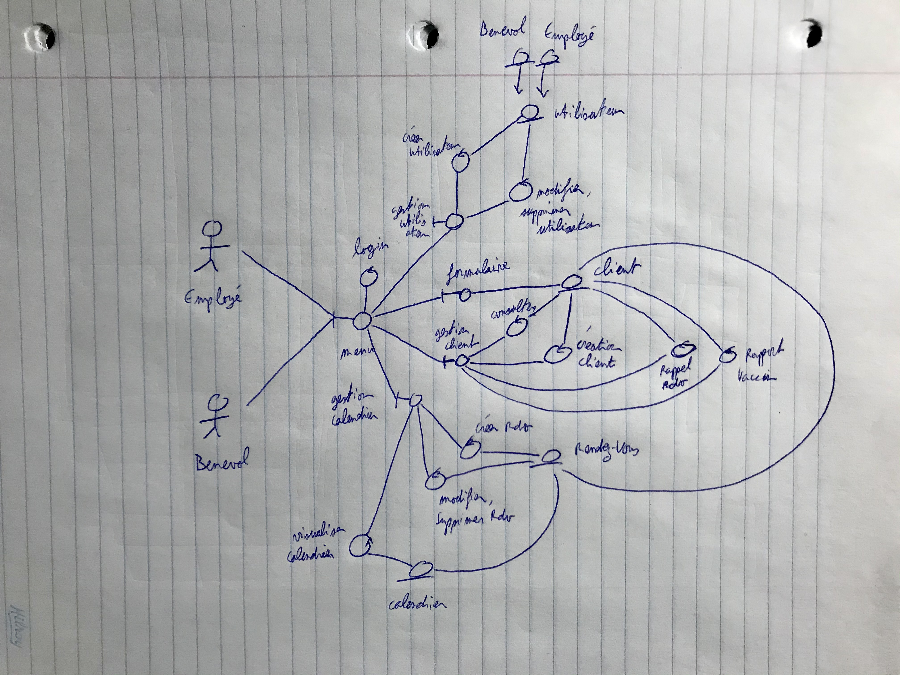

Besoins matériels
Suite à la réunion du 1er novembre, l'équipe à jugé nécessaire que le système confectionné devrait être une application web. La conséquence de cela est que pour élaborer une telle application, il serait nécessaire de mettre un place un serveur dans lequel serait stocker les informations des visiteurs et des employés. Ce qui permettrait de sécuriser de tels informations. Il serait donc nécessaire d'avoir des machines connectées à internet ou a un intranet pour travailler. Le logiciel serait instancié qu'une seule fois sur le serveur et gérerait des unités en parallèle en fonction d'un manager de session et en attribuant des numéros d'identifiant unique.
Contraintes physiques & conceptuelles
La contraintes physiques majeur est la dépendance à un réseau. Il faudra donc connecté tous les appareils souhaitant interagir avec le système par wifi ou par ethernet. Pour les personnes souhaitant télétravailler comme par exemple pour les prises de rendez vous par téléphone, il faudra créer un protocol de tunnelisation de donnée vpn pour entreprise. Aussi dans le serveur il faudra un disque dur de taille suffisante pour sérialiser les rendez vous et les comptes de potentiellement tous les visiteurs potentiels que possède la ville.
Modèle dynamique
Diagrammes d'activités
Lors de la construction des diagrammes d'activités, les difficultés rencontrées sont :
- Le formattage des éléments de façons propres est facile à lire
- Déterminer tous les "routes" possibles
- Faire plusieurs repasses puisque les flèches portent souvent à confusion.
Après avoir fini 1 des diagrammes, le reste est assez simple puisqu'ils sont dans le même format.


Modèle d'objets
Choix du design
Pendant cette phase de conception du système VaxTodo, nous nous sommes posé la question de l'architecture du système. Après notre seconde réunion, nous avons jugé pertinent de concevoir le système selon une architecture hybride basée sur les interactions directes avec le client et basée sur une base de donnée. Ainsi nous pourrions concevoir une application web privée qui interagirait directement dans un serveur lui aussi privé. Au sujet de la conception du système, nous avons souhaiter à optimiser le rapport couplage-cohésion. Et nous avions tout d'abord hésitez à utiliser un framework java (e.g. Zerocouplage) mais par manque de temps nous avions décider d'implémenter le prototype de manière conventionnelle. Pour assurer cette optimisation nous avons pris le temps de réflechir à utiliser des classes controller qui permettent d'éviter de rendre les modules trop dépendants d'une seule classe.
Design détaillé
Diagrammes de classes
La plus grande difficulté lors de l'élaboration d'un diagramme de classes
est de garder en tête qu'il faut respecter les règles de couplage et de cohésion.
Le modèle architectural choisie dans notre contexte est celui du Modèle-Contrôleur-Vue
(MVC) nous permet de bien découpler les classes entre elles. En effet, il est possible
de séparer non seulement les méthodes des classes implémentées mais aussi de garder
une bonne encapsulation des éléments. De plus, la couche de données telle que proposée
en classe nous permet de bien assembler, aggréger et répartir les "responsabilités" entre
les classes. Ceci et les liens entre les classes ont constitué la plus grande partie
du travail en ce concerne le diagramme de classes.
Une autre difficulté recontrée est l'implémentation et le changement que ce début
d'implémentation apporte au diagramme de classes. Il fallait changer les données, les
types au fur et à mesure qu'on avançait dans le projet.
Visualiser l'image au complet via ce lien.
{kind=link}
Diagrammes de séquences
Le diagramme de séquence a été conçut en fonction des choix de concetion explicité dans le diagramme de classe. Ici l'enjeu était de rendre rigoureusement intelligible les interactions entre les classes en fonction des CU analysés. Il n'y a pas de message asynchrone dans le système VaxToDo donc cela permet de rendre plus claire les diagrammes, par contre plusieurs unités par session peuvent opérer en même temps. Cela implique qu'il faudra gérer les potentiels erreurs car admettons si une personnes supprime un compte visiteur et qu'au même moment un autre employé créer un rendez vous avec ce même visiteur alors que ce passera t il ?